(Si estás buscando contenido más para principiantes, por favor visita algunos de mis otros codelabs aquí). Si estás preparado para el desafío, entonces procede.
Esta es una serie de codelabs enfocada en Flutter y Gemini, en la cual aprenderás lo siguiente:
La imagen de abajo es una captura de pantalla de lo que construiremos durante esta sesión, así que síguela:
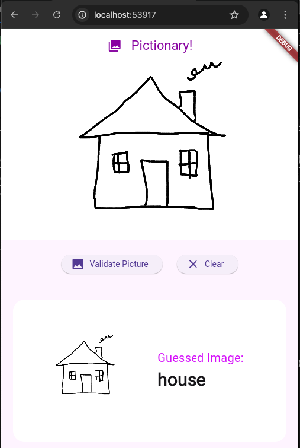
Flutter es un kit de herramientas de UI de código abierto soportado por Google para construir interfaces de usuario hermosas, compiladas nativamente de forma multiplataforma, utilizando Dart, otro lenguaje de programación de código abierto soportado por Google, como su lenguaje principal.
Flutter for Web proporciona la barrera de entrada más baja cuando se trata de convertirse en un desarrollador de Flutter prolífico. La mayoría de los conceptos aprendidos en Flutter se pueden aplicar en un escenario multiplataforma, y la web no es una excepción, así que únete a nosotros para construir aplicaciones web atractivas siguiendo los codelabs de esta serie.
Realicemos los siguientes pasos:
NOTA: asegúrate de que puedes ejecutar el comando flutter doctor como
mínimo antes de proceder al siguiente paso, ya que esto es una prueba de que el Flutter SDK está
configurado correctamente en tu entorno.
Utilizando tu IDE preferido (en nuestro caso, Visual Studio Code), abriremos una línea de comandos y ejecutaremos el siguiente comando para crear el proyecto base de Flutter:
flutter create gemini_pictionary_app
Esto creará un proyecto de Flutter llamado gemini_pictionary_app con algunos andamios y código boilerplate en su lugar. Nos desharemos de la mayor parte más adelante en esta sesión.
Después de la creación del proyecto, asegúrate de cd en el proyecto o volver a abrir Visual
Studio Code en la carpeta creada para el proyecto (gemini_pictionary_app) antes de
continuar.
flutter run -d chrome
NOTA: desafortunadamente no hay hot-reload durante el desarrollo para la web, solo hot restart.
Después de cargarlo por primera vez, asegúrate de que puedes ver el proyecto de muestra de Flutter Web, como tal:
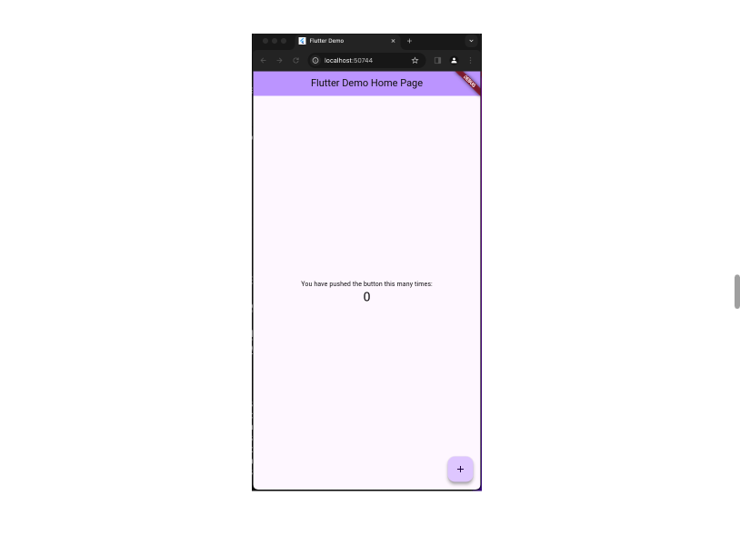
Instalaremos las siguientes dependencias:
Puedes instalarlas ejecutando el siguiente comando en la línea de comandos:
flutter pub add flutter_riverpod google_generative_ai finger_painter flutter_animate
Con las dependencias en su lugar y el proyecto en marcha, ¡procedamos!
Si no quieres configurar tu máquina con Flutter en este momento, puedes utilizar Project IDX (https://idx.dev/), un espacio de trabajo totalmente basado en la web para el desarrollo de aplicaciones full-stack, completo con la última IA generativa de Gemini, y vistas previas de aplicaciones de alta fidelidad, impulsadas por emuladores en la nube.
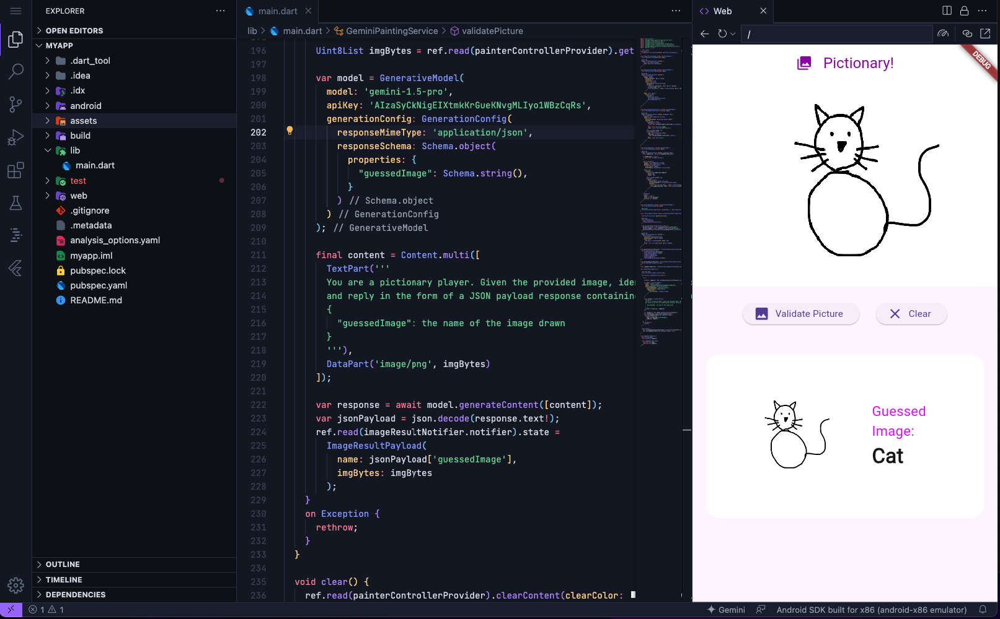
Asegúrate de que después de configurar tu proyecto en IDX, instales las dependencias necesarias para este proyecto, abriendo una nueva Terminal (CTRL + `) o en Project IDX, ve al menú de hamburguesa, luego Terminal > Nueva Terminal y ejecuta el siguiente comando:
flutter pub add flutter_riverpod google_generative_ai finger_painter flutter_animate
Gemini es una familia de modelos de lenguaje grandes multimodales desarrollados por Google DeepMind, que sirven como sucesores de LaMDA y PaLM 2. Compuesto por Gemini Ultra, Gemini Pro y Gemini Nano, se anunció el 6 de diciembre de 2023, posicionado como un competidor de GPT-4 de OpenAI.
Para hablar con Gemini, utilizaremos la API de Gemini, y para eso necesitaremos una clave de API, que proporcionaremos a Flutter a través del Google AI Dart SDK.
Ve a Google AI Studio e inicia sesión con una cuenta de GMail.
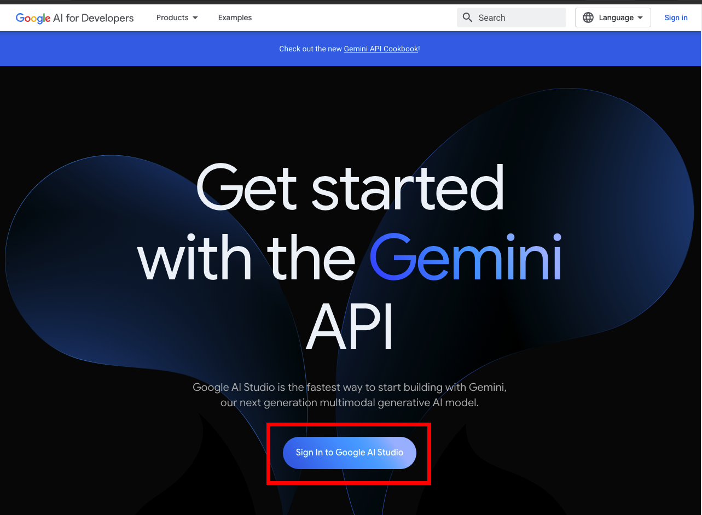
Dado que desarrollaremos en nuestro propio entorno, asegúrate de seleccionar la opción Desarrollar en tu propio entorno - haz clic en Obtener clave de API:
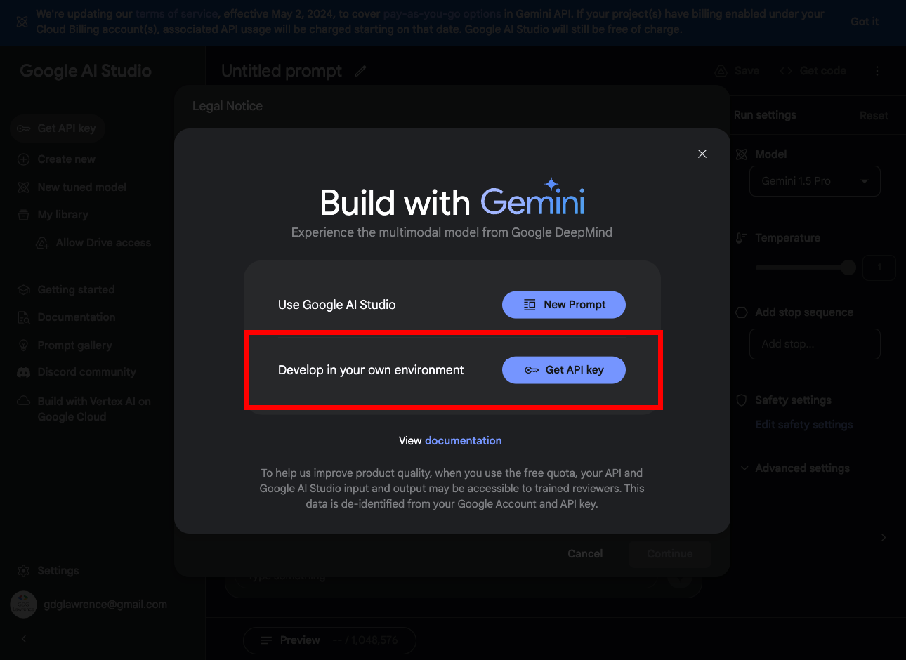
Acepta todas las opciones aplicables - haz clic en Continuar:
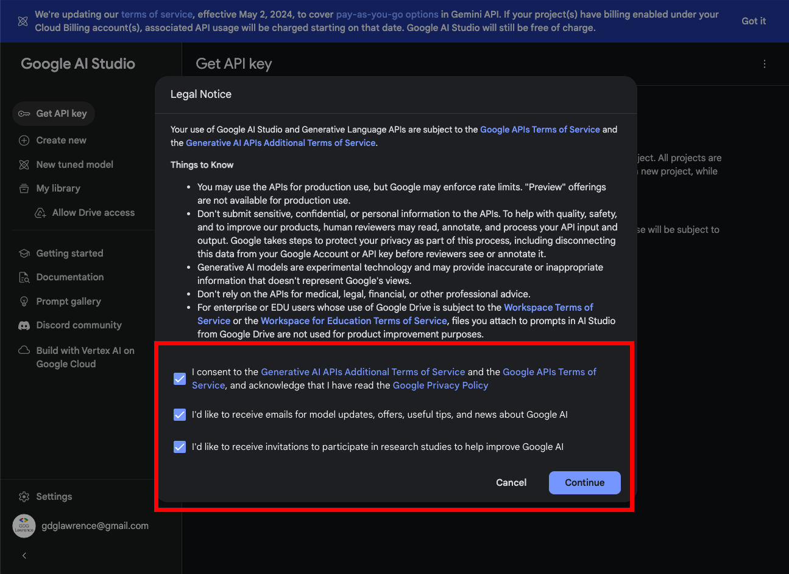
Las claves de API están asociadas con un proyecto de Google Cloud. Haz clic en Crear clave de API, luego selecciona si asociarla con un proyecto existente o crear un nuevo proyecto.
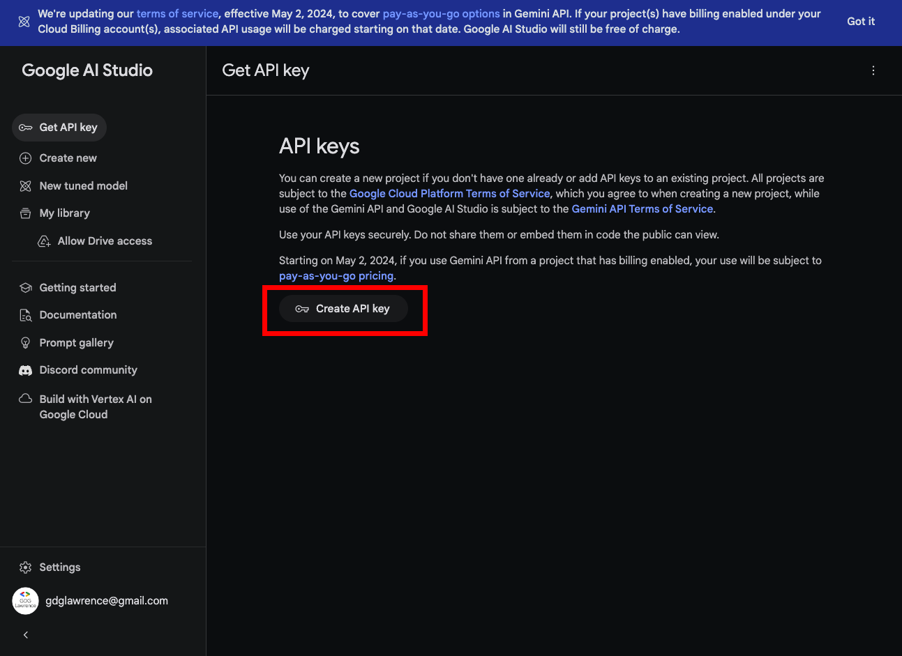
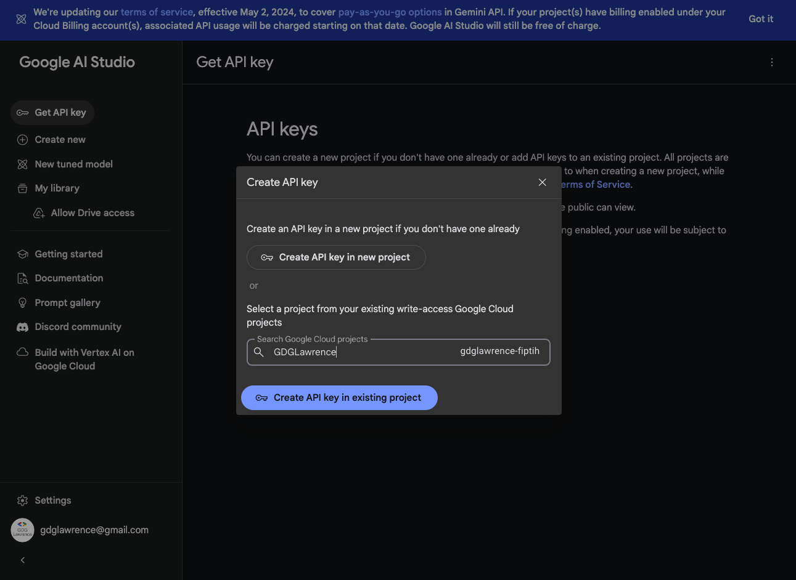
Una vez que se genere la clave, guárdala localmente en algún lugar; la necesitaremos más adelante y ofreceremos formas de protegerla.
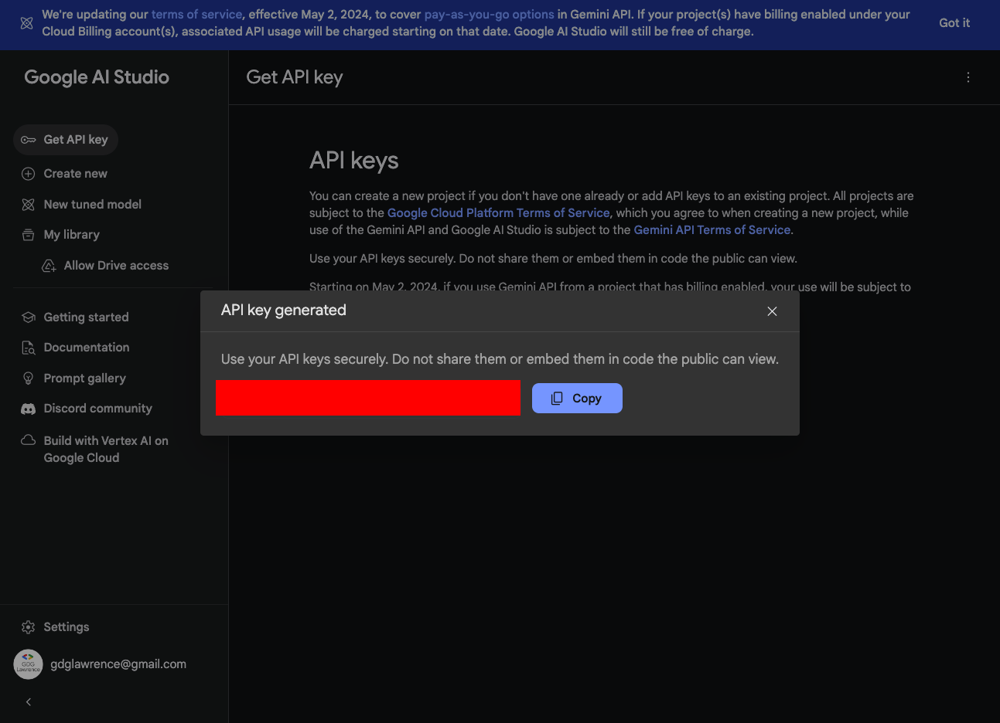
Con nuestra clave de API en la mano, ¿procedemos a construir la aplicación, verdad?
Abajo hay un breve esquema de lo que abordaremos desde la perspectiva de la composición de widgets:
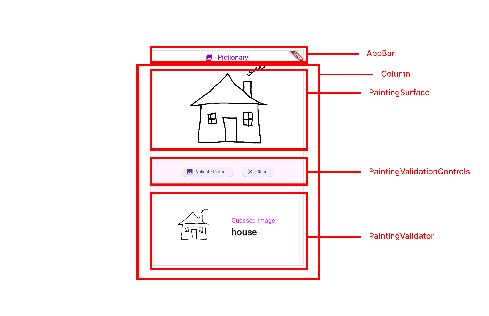
Como sabes, todo en Flutter es un widget, y Flutter te da control total de lo que se puede considerar un widget y cómo pintarlo en la pantalla: ¡eres dueño de cada píxel! Aquí es donde Flutter brilla.
Comencemos configurando la estructura inicial de la aplicación. Comenzaremos creando el widget de la aplicación raíz.
Navega a tu proyecto y comienza eliminando todo de tu archivo main.dart.
NOTA: a medida que ensamblamos la aplicación, puedes obtener errores temporales, ¡no te preocupes! Esto es parte del progreso de la construcción y las cosas deberían encajar a medida que avanzamos. ¡Sigue adelante!
Procede a agregar todas las dependencias requeridas por este proyecto, primero asegurándote de haber agregado los paquetes a través de la terminal, como tal:
flutter pub add flutter_riverpod google_generative_ai finger_painter flutter_animate
luego agrega las importaciones junto con el widget de la aplicación raíz, llamado GeminiTempApp:
// dependencies
import 'dart:convert';
import 'package:finger_painter/finger_painter.dart';
import 'package:flutter/material.dart';
import 'package:flutter/services.dart';
import 'package:flutter_animate/flutter_animate.dart';
import 'package:flutter_riverpod/flutter_riverpod.dart';
import 'package:google_generative_ai/google_generative_ai.dart';
import 'dart:ui' as ui;
// root widget
void main() {
runApp(const ProviderScope(child: GeminiPictionaryApp()));
}
Observa cómo el widget raíz GeminiPictionaryApp está envuelto dentro de un ProviderScope; esto lo proporciona Riverpod y es lo que facilitará la creación de un alcance alrededor de nuestra aplicación para que podamos implementar una solución de gestión del estado utilizando Riverpod.
Procede y crea la estructura para el widget raíz GeminiPictionaryApp, que debería devolver como hijo un widget MaterialApp (que envuelve todo el estilo Material) y el widget principal que encapsula toda la funcionalidad, que se llamará GeminiPictionaryHome, como tal:
// rest of the code omitted for brevity
class GeminiPictionaryApp extends StatelessWidget {
const GeminiPictionaryApp({super.key});
@override
Widget build(BuildContext context) {
return const MaterialApp(
home: GeminiPictionaryHome(),
);
}
}
El GeminiPictionaryHome encapsulará la funcionalidad principal para esta aplicación, que será algún tipo de aplicación web de estilo "pictionary", donde los usuarios dibujarán con su mouse o dedos cualquier imagen, luego la enviarán a Gemini como parte de sus capacidades de multi-modalidad para adivinar lo que dibujó el usuario.
Esta aplicación contendrá lo siguiente:
Añade el siguiente código debajo del existente:
// rest of the code omitted
class GeminiPictionaryHome extends StatelessWidget {
const GeminiPictionaryHome({super.key});
@override
Widget build(BuildContext context) {
return Scaffold(
body: const Center(
child: Column(
children: [
// painting surface goes here
// painting validation controls goes here
// painting validator goes here
]
)
)
);
}
}
Comencemos desde la parte superior y añadamos un widget AppBar más distintivo a nuestro widget GeminiPictionaryHome. Establece la propiedad appBar a nuestro Scaffold principal y añade un widget AppBar:
// inside the GeminiPictionaryHome's Scaffold
// set the **appBar** property to this:
appBar: AppBar(
backgroundColor: Colors.white,
elevation: 0,
centerTitle: true,
title: const Row(
mainAxisSize: MainAxisSize.min,
children: [
Icon(Icons.collections, color: Colors.purple),
SizedBox(width: 16),
Text('¡Pictionary!', style: TextStyle(color: Colors.purple))
],
),
),
Confirma que puedes ver la barra de la aplicación como se muestra a continuación, luego procede:
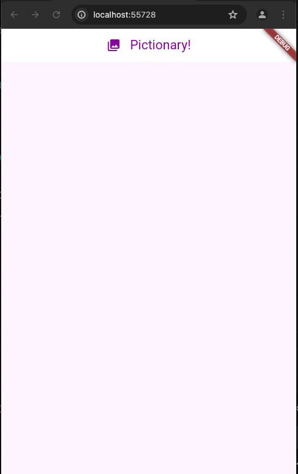
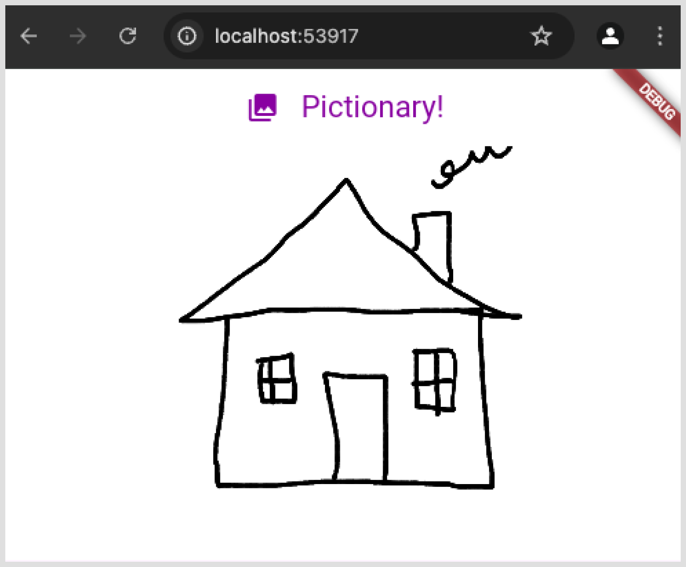
Aquí es donde ocurre la mayor parte de la diversión; la superficie de pintura la proporciona nuestro paquete importado finger_painter, que nos permitirá pintar con nuestro dedo o mouse y dibujar en una superficie blanca, desde la cual generaremos una imagen que podemos enviar a Gemini como parte de sus capacidades de multi-modalidad.
Necesitaremos importar una imagen externa para llenar nuestro lienzo con un fondo blanco, ya que finger_painter carece de esta capacidad.
Descarga esta imagen a nuestro entorno local primero. Esta imagen no es más que un cuadrado blanco (si tienes el tuyo propio, aún mejor), pero asegúrate de llamarlo bgimg.png o algo que puedas añadir fácilmente en el código.
Añade esta imagen a tu proyecto en el nivel raíz dentro de una carpeta llamada assets, como tal:
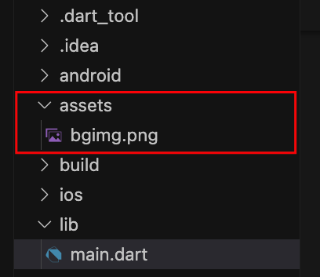
Actualiza tu pubspec.yaml para añadir la capacidad de acceder a los assets locales dentro de nuestra aplicación, como tal:
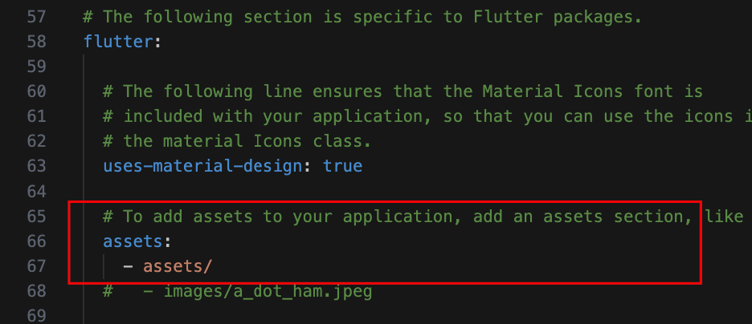
Comencemos añadiendo un provider que encapsula un PainterController, que proporciona las capacidades subyacentes a nuestra superficie de pintura finger_painter, como tal:
final painterControllerProvider = Provider((ref) {
return PainterController()
..setPenType(PenType.paintbrush)
..setStrokeColor(Colors.black)
..setMinStrokeWidth(3)
..setMaxStrokeWidth(10)
..setBlurSigma(0.0)
..setBlendMode(ui.BlendMode.srcOver);
});
Este painterControllerProvider proporciona un PainterController con las siguientes opciones:
Con eso en su lugar, procede ahora y añade el scaffold / widget placeholder name dentro de nuestro widget GeminiPictionaryHome, como el primer hijo de su widget Column (elimina el comentario que dice ```painting surface goes here``)` y añade PaintingSurface, como tal:
// inside the GeminiPictionaryHome's Column children...
PaintingSurface(),
Ahora, ve y crea un widget ConsumerStatefulWidget que complete el widget PaintingSurface. Lo estamos haciendo como un ConsumerStatefulWidget ya que será un StatefulWidget con capacidades de consumo para poder recuperar las dependencias de gestión del estado a través de su referencia Ref proporcionada:
class PaintingSurface extends ConsumerStatefulWidget {
const PaintingSurface({super.key});
@override
ConsumerState createState() => _PaintingSurfaceState();
}
class _PaintingSurfaceState extends ConsumerState {
@override
void initState() {
super.initState();
}
@override
Widget build(BuildContext context) {
return Container();
}
}
Desde dentro del widget PaintingSurface, nos gustaría obtener una referencia al painter controller para realizar alguna inicialización.
Dentro de _PaintingSurfaceState, en la parte superior de la clase de estado, añade una referencia al PainterController, como tal:
// top of the _PaintingSurfaceState class:
late PainterController painterController;
En cuanto al proceso de inicialización, dentro del método initState, añade un nuevo stub de método llamado initializePainterController.
// inside the initState()
// add this line under the super.initState() call
initializePainterController();
Crea el método faltante con las siguientes características:
Copia todo el método como se muestra a continuación:
// add this method inside the _PaintingSurfaceState class
void initializePainterController() async {
painterController = ref.read(painterControllerProvider);
ByteData bgImg = await rootBundle.load('assets/bgimg.png');
painterController.setBackgroundImage(bgImg.buffer.asUint8List());
}
Procedamos con el código. Dentro del método build de nuestro widget _PaintingSurfaceState, devuelve una instancia de nuestro widget Painter, alimentándolo con el controlador painterController, con un color de fondo blanco, un hijo ColoredBox coloreado con blanco, y como sus dimensiones, hazlo de 300 píxeles de alto y coincidiendo con el ancho de la superficie de renderizado, como tal:
// inside the build method, replace the existing
// Container placeholder with a Painter instance:
return Painter(
controller: painterController,
backgroundColor: Colors.white,
size: Size(
MediaQuery.sizeOf(context).width, 300,
),
child: const ColoredBox(color: Colors.white),
);
Tu aplicación debería verse así después de ensamblar todas las piezas correctamente:
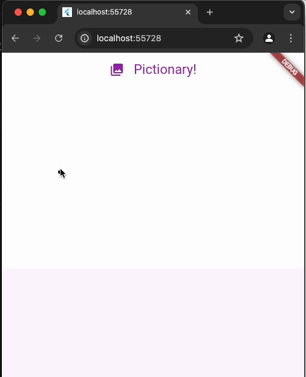
¿Listo para pasar al siguiente paso? ¡Entonces procedamos!
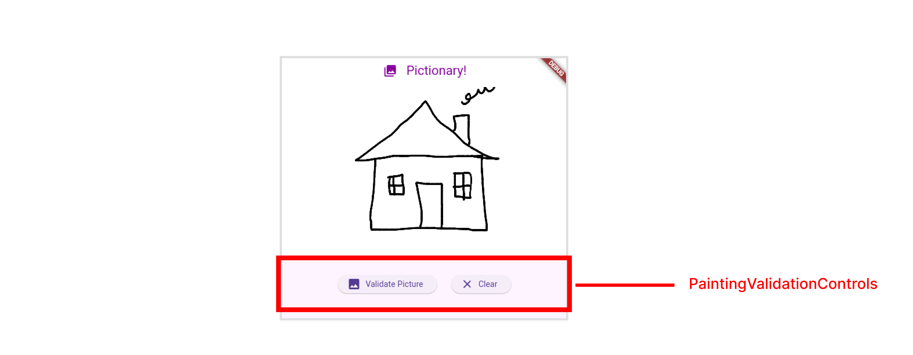
Añadamos un widget que nos permita activar la validación de la imagen dibujada, así como limpiar la superficie de pintura para que podamos dibujar otra imagen y empezar de nuevo.
De vuelta en nuestro GeminiPictionaryHome, como otro hijo del widget principal Column, justo debajo del widget PaintingSurface recién añadido, añadamos el nombre del widget stub llamado PaintingValidationControls, como tal:
// under the existing PaintingSurfaceWidget, add this:
PaintingValidationControls(),
Este widget encapsulará dos widgets ElevatedButton dentro de una Row para un diseño horizontal de los controles. Cada widget ElevatedButton tendrá una funcionalidad específica:
El widget PaintingValidationControls extiende ConsumerWidget porque más adelante lo utilizaremos para localizar un servicio que encapsula la funcionalidad de validación y limpieza para nosotros. Volveremos para llenar los espacios en blanco más tarde. Por ahora, añade la siguiente clase a tu código, de la siguiente manera:
class PaintingValidationControls extends ConsumerWidget {
const PaintingValidationControls({super.key});
@override
Widget build(BuildContext context, WidgetRef ref) {
return Padding(
padding: const EdgeInsets.all(24),
child: Row(
mainAxisAlignment: MainAxisAlignment.center,
children: [
ElevatedButton.icon(
onPressed: () {
// validate picture action
},
icon: const Icon(Icons.image),
label: const Text('Validar Imagen')
),
const SizedBox(width: 24),
ElevatedButton.icon(
icon: const Icon(Icons.clear),
onPressed: () {
// clearing surface action
},
label: const Text('Limpiar')
)
],
),
);
}
}
Confirma que puedes ver los botones (no funcionales por el momento) debajo del área de la superficie de pintura, como se muestra a continuación. Luego procede al siguiente paso:
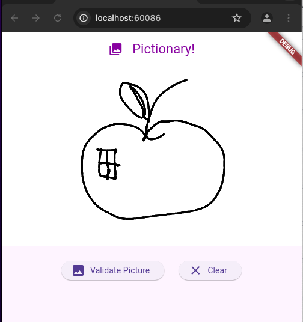
Los modelos multimodales pueden procesar una amplia variedad de entradas, incluyendo texto, imágenes y audio, como prompts y convertir esos prompts en varias salidas, no solo el tipo de fuente.
Un modelo multimodal es un modelo ML (aprendizaje automático) que es capaz de procesar información de diferentes modalidades, incluyendo imágenes, vídeos y texto. En este ejemplo, el modelo multimodal de Google, Gemini, puede recibir una imagen dibujada por el usuario e interpretar lo que es el dibujo, independientemente de lo bien que esté dibujado, y responder en consecuencia.
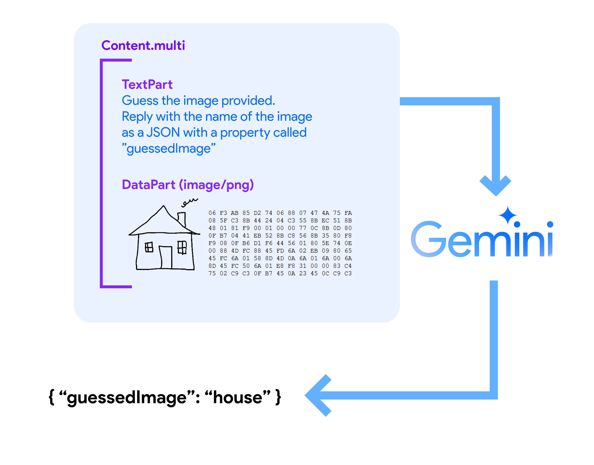
Para más información, visita este enlace.
¡Continuemos!
En este paso, definiremos el payload que deberíamos esperar para alimentar nuestra UI después de que Gemini identifique nuestra imagen.
Para esto, crearemos una clase de modelo Dart llamada ImageResultPayload. Esta clase encapsulará dos propiedades simples:
Ve y añade la siguiente clase:
class ImageResultPayload {
final String name;
final Uint8List imgBytes;
const ImageResultPayload({
required this.name,
required this.imgBytes,
});
}
Como de costumbre, añadamos un tipo de provider correspondiente StateProvider para permitirnos mantener una referencia de este ImageResultPayload para que los widgets de escucha puedan reaccionar ante los cambios en el estado de este provider, como tal:
// add this along with your other providers
final imageResultNotifier = StateProvider<ImageResultPayload>((ref) => null);
Creemos una clase de servicio que encapsulará la funcionalidad de validar la imagen dibujada en la superficie de pintura, así como otras funcionalidades.
Comienza creando una clase llamada GeminiPaintingService; añade una referencia a un Ref de Riverpod para que podamos localizar otros servicios y obtener sus datos para ensamblar un payload multi-modal para enviar a Gemini.
Ve y toma el código stub a continuación:
class GeminiPaintingService {
final Ref ref;
const GeminiPaintingService(this.ref);
// REST OF THE CODE WILL GO HERE
}
Dentro de nuestra clase recién añadida GeminiPaintingService, añade un método llamado validatePicture(), que encapsulará la siguiente funcionalidad:
ref.read(painterControllerProvider).getImageBytes()image/png
ref.read(imageResultNotifier.notifier).state estableciéndola en el objeto
ImageResultPayload ensamblado, que debería contener tanto el nombre adivinado como
la imagen enviada.Añade el siguiente método dentro de nuestra clase de servicio, y asegúrate de añadir tu propia clave de
API de Gemini donde dice YOUR_API_KEY_HERE:
// inside the GeminiPaintingService class,
// add the following method:
Future validatePicture() async {
try {
// collect the image drawn as a sequence of bytes
Uint8List imgBytes = ref.read(painterControllerProvider).getImageBytes()!;
// create a Gemini GenerativeModel instance
var model = GenerativeModel(
model: 'gemini-1.5-pro',
apiKey: 'YOUR_API_KEY_HERE',
generationConfig: GenerationConfig(
responseMimeType: 'application/json',
responseSchema: Schema.object(
properties: {
"guessedImage": Schema.string(),
}
)
)
);
// create a multi-part content message,
// containing a TextPart and a DataPart, with a mimeType of 'image/png'
final content = Content.multi([
// text part (prompt)
TextPart('''
You are a pictionary player. Given the provided image, identify its contents
and reply in the form of a JSON payload response containing the following properties:
{
"guessedImage": the name of the image drawn
}
'''),
// image part
DataPart('image/png', imgBytes)
]);
var response = await model.generateContent([content]);
var jsonPayload = json.decode(response.text!);
ref.read(imageResultNotifier.notifier).state =
ImageResultPayload(
name: jsonPayload['guessedImage'],
imgBytes: imgBytes
);
}
on Exception {
rethrow;
}
}
Dentro de esta misma clase, añade un método adicional llamado clear que maneja la limpieza de la superficie de pintura y restablece el provider imageResultNotifierProvider, como tal:
void clear() {
ref.read(painterControllerProvider).clearContent(clearColor: Colors.white);
ref.read(imageResultNotifier.notifier).state = null;
}
Con esto en su lugar, añadamos el provider correspondiente para que podamos localizar este servicio desde dentro de nuestros widgets interesados y podamos acceder a esta funcionalidad.
// add this along with our other available providers
final paintingServiceProvider = Provider<GeminiPaintingService>((ref) {
return GeminiPaintingService(ref);
});
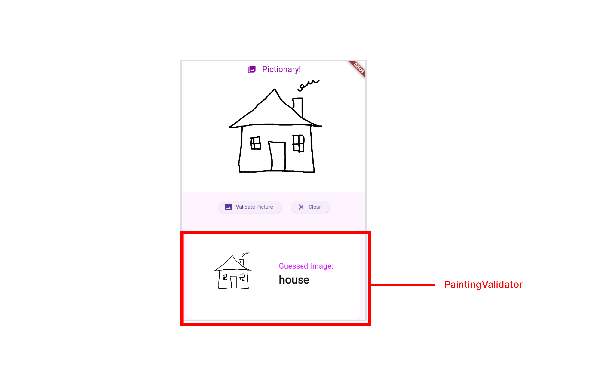
Añadamos el widget donde el usuario verá la respuesta de Gemini a la validación de la imagen proporcionada.
Comienza añadiendo el nombre del widget stub de vuelta dentro de nuestro widget GeminiPictionaryHome, dentro de su hijo Column debajo del existente PaintingValidationControls, como tal:
// inside the Column, under the PaintingValidationControls,
// add this piece of code:
PaintingValidator(),
Completemos este widget.
Nuestro widget PaintingValidator encapsula la siguiente funcionalidad:
class PaintingValidator extends ConsumerWidget {
const PaintingValidator({super.key});
@override
Widget build(BuildContext context, WidgetRef ref) {
final imgPayload = ref.watch(imageResultNotifier);
if (imgPayload == null) {
return const SizedBox.shrink();
}
return Container(
margin: const EdgeInsets.all(20),
padding: const EdgeInsets.all(20),
decoration: BoxDecoration(
color: Colors.white,
borderRadius: BorderRadius.circular(20),
),
child: Row(
children: [
Image.memory(imgPayload.imgBytes,
width: 200,
height: 200,
),
const SizedBox(width: 24),
Expanded(
child: Column(
mainAxisSize: MainAxisSize.min,
crossAxisAlignment: CrossAxisAlignment.start,
children: [
const Text('Guessed Image:', style: TextStyle(fontSize: 20, color: Colors.purpleAccent),),
Text(imgPayload.name, style: const TextStyle(fontSize: 30, fontWeight: FontWeight.bold),),
],
),
)
],
),
);
}
}
Aún no verás nada, ya que nada está activando la validación ni limpiando la superficie de pintura. Enganchemos esa funcionalidad.
Volvamos a nuestro widget creado previamente llamado PaintingValidationControls. Localiza el primer widget ElevatedButton.icon con la etiqueta Validar Imagen y reemplaza su evento onPressed por el siguiente fragmento de código:
// replace the onPressed event by the following code
// for the "Validate Picture" button:
onPressed: () async {
await ref.read(paintingServiceProvider).validatePicture();
},
El fragmento de código anterior aprovecha el provider paintingServiceProvider y su funcionalidad validatePicture, y cuando el usuario lo toca, sigue adelante y realiza la validación por nosotros.
Continúa y localiza el segundo widget ElevatedButton.icon con la etiqueta Limpiar y reemplaza su evento onPressed por el siguiente fragmento de código:
// replace the onPressed event by the following code
// for the "Clear" button:
onPressed: () async {
ref.read(paintingServiceProvider).clear();
},
Al igual que el botón anterior, aprovecha el provider paintingServiceProvider y su funcionalidad clear, que al tocarlo el usuario, limpia la superficie de pintura y restablece el provider de resultado de la imagen, así de simple.
Ahora, reconstruye toda la aplicación y probémosla y pongamos a prueba tus habilidades de dibujo.
Intenta dibujar algo (nada demasiado elegante), por ejemplo, un coche. Haz clic en el botón Validar Imagen. Espera un poco hasta que Gemini responda. En la parte inferior de la pantalla, deberías ver un contenedor que muestra el mismo coche que dibujaste, seguido de una etiqueta que dice "Imagen Adivinada" y la palabra "coche" debajo.
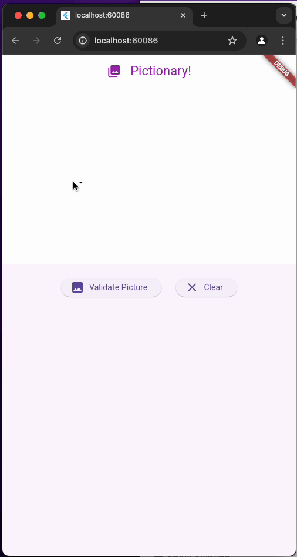
¡Hasta ahora tenemos una aplicación web de Flutter rápida al estilo pictionary completamente funcional!
Puedes continuar añadiendo otra funcionalidad como:
Añadiré solo una pequeña cosa al PaintingValidator ya que me gustaría que se deslizara hacia arriba usando una transición animada gracias al paquete flutter_animate.
Al widget Container que devuelve dentro del método build de PaitingValidator, simplemente añade el método animate(), que le da a cualquier widget capacidades de animación, seguido de una llamada al método slideY, ya que queremos que se deslice hacia arriba, utilizando una curva ease-in-out, una duración de medio segundo y comienza una unidad por debajo de su posición original.
Añade el siguiente código al final del Container, como tal:
// at the end of the Container in the PaintingValidator widget,
// attach this call
return Container(
//.. rest of the code here
).animate()
.slideY(
begin: 1, end: 0,
curve: Curves.easeInOut,
duration: 0.5.seconds,
);
Al hacer esto, estamos añadiendo un poco de estilo y dinamismo a este widget, permitiendo algún tipo de comportamiento similar a un toast cuando el resultado llega de Gemini.
Si añadiste ese fragmento de código correctamente, deberías obtener el siguiente comportamiento:
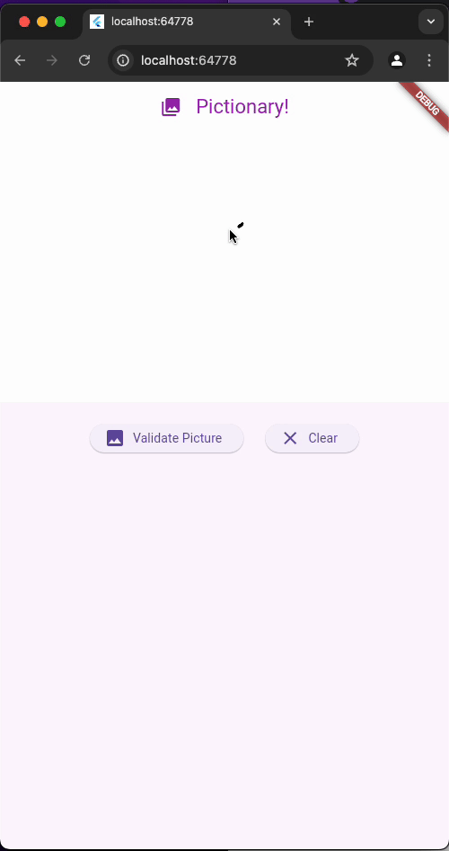
¡La aplicación se ve realmente bien y es completamente funcional! Me encanta cómo podemos aprovechar el poder de Gemini para construir aplicaciones donde Gemini nos proporciona los datos que necesitamos, ¡todo lo que necesitamos es indicarle y listo!
Si llegaste hasta este paso, felicidades por llegar a este punto. ¡Espero que hayas aprendido una o dos cosas sobre Flutter y cómo potenciar tus aplicaciones web de Flutter con el poder de la IA!
En este codelab, logramos lo siguiente:
Intenta no mantener tu clave de API de Gemini codificada en tu proyecto al hacer que este proyecto esté disponible públicamente. Debes seguir las mejores prácticas al almacenar tus claves de API. Aquí hay un gran artículo sobre cómo hacerlo por Andrea Bizzotto sobre el almacenamiento de claves de API en Flutter.
Aquí está el código completo para este laboratorio (disponible como un Gist público), en caso de que te hayas quedado atrás o no hayas podido hacer que el tuyo funcione por alguna razón. ¡Que lo disfrutes!